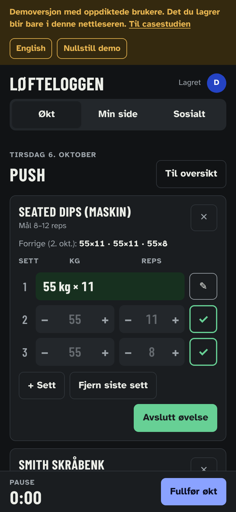
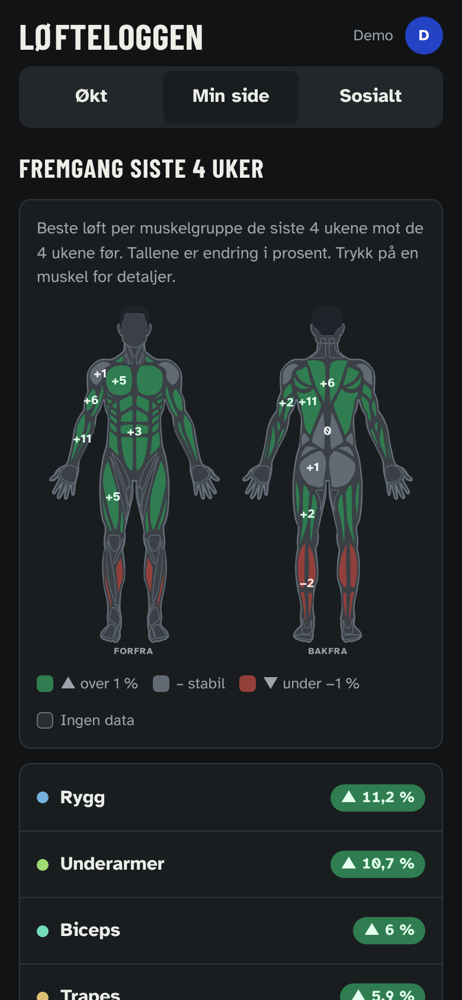
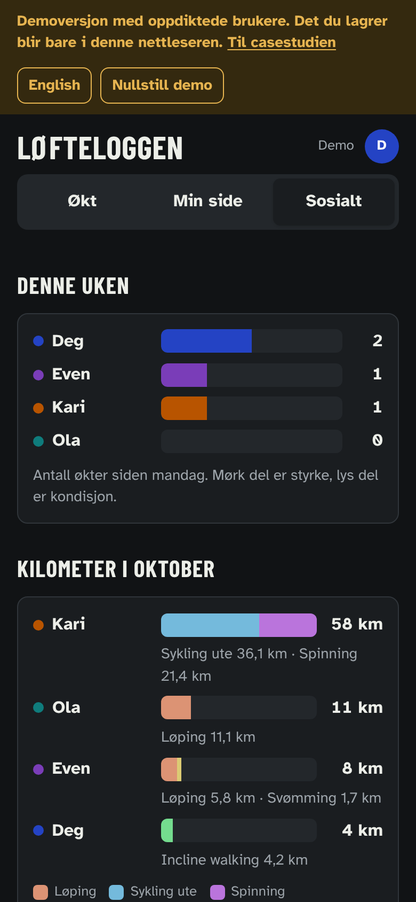

Løfteloggen
Hva det er
En treningslogg for meg og to venner. Øktene føres sett for sett i pausene på telefonen. Fremgangen vises som en muskelfigur forfra og bakfra, der hver muskelgruppe er farget etter hvor mye sterkere den har blitt de siste fire ukene.
Oppdraget
Oppdraget var mitt eget. Jeg trente styrke tre til fem ganger i uka uten å føre noe. Apple Watch registrerte at jeg trente, men ikke hva jeg løftet. Gratisversjonen av Hevy har plass til fire økter, og jeg har fem, og grafene går bare tre måneder tilbake.
Rammene var faste fra start. Det skulle gå an å føre et sett på under ti sekunder med én hånd. Tre personer skulle dele appen. Ingen skulle se hva de andre løfter. Det holder i grensesnittet, ikke i dataene.
Hva jeg gjorde
Forrige økt som grå tekst
Første versjon fylte inn forrige økts tall som verdier, og et sett telte bare når det var huket av. Den første økta jeg førte, ble lagret med alle tallene og null sett, fordi jeg aldri trykket på haken. Nå står forrige økts tall i grått. Ett trykk godtar dem, og et låst sett har en egen knapp for å redigere.
Ett tall per løft
Det beste settet i hver øvelse regnes om til en beregnet maks på én repetisjon: vekt × (1 + reps/30). Da kan 60 kg × 10 og 65 kg × 8 sammenlignes direkte. Kroppsvektøvelser uten ekstra vekt bruker flest reps i stedet.
Prosent i stedet for kilo
Den sosiale delen viser endring i prosent, siste fire uker mot de fire før. Vekter vises aldri. Den som løfter minst, kan ha størst fremgang.
Hovedmuskel og sekundærmuskel
Hver øvelse har en hovedmuskel som teller fullt og sekundærmuskler som teller halvt. Smith skråbenk teller for bryst, og litt for skuldre og triceps. Katalogen har 69 øvelser. Egne øvelser får muskler valgt fra en liste.
Status uten farge alene
Grønn, grå og rød har hver sitt tegn, ▲, – og ▼, og tallet står skrevet ut. Hver muskelgruppe har tall i bare én visning, så tallene ikke kolliderer på en smal skjerm.
Figuren
Første versjon var bygd av avrundede rektangler og så ut som en leketøysfigur. Den er byttet ut med et åpent muskelkart med kanter mellom musklene. I den sosiale delen har hver person sin hårfarge og en valgt kroppsform, slik at figurene skiller seg fra hverandre.
Kondisjon som egen type
Løping, sykling og svømming føres med tid og distanse, og tempo regnes ut mens du skriver. Kondisjon påvirker ikke muskelfiguren, fordi prosentene bygger på styrkeløft.
Demo uten ekte brukere
Appen deles bare med dem jeg har invitert. Demoversjonen er en egen side med oppdiktede brukere. Den viser appen uten å gi tilgang til de ekte dataene. Det du gjør i demoen, lagres bare i din egen nettleser.
Hva det ser ut som
Tre faner: Økt, Min side og Sosialt.

Min side har figuren, en liste over muskelgrupper sortert etter fremgang, en månedsrapport og kurver per øvelse.

Sosialt viser økter denne uken som stolper, med styrke mørkt og kondisjon lyst, og en rekordfeed der man kan reagere med emoji.

Hva jeg ville endret
Åtte uker før figuren sier noe. Prosenten trenger fire uker å sammenligne med. De to første månedene er figuren grå for alle.
Apple Watch må skrives av. Apple Helse har ingen kobling en nettside kan bruke, så kondisjonsøkter føres for hånd.
Halv vekt er et anslag. At sekundærmuskler teller halvt, er en regel jeg satte, ikke noe jeg har målt.
Formelen blir mindre presis jo flere repetisjoner. Et sett på 20 kabelcrunch sier mindre om styrke enn et sett på 6 knebøy, men begge teller like mye.
Øktene er ikke låst ned. Appen viser bare prosent til de andre, men alle med tilgang kan teknisk sett lese hverandres økter.
Fakta
- Rolle
- Konsept, krav, designvalg og testing. Koden er skrevet med Claude.
- År
- 2026
- Verktøy
- HTML, CSS og JavaScript. Data lagres i databasen til en publisert Claude-artefakt. Muskelkartet er fra react-muscle-highlighter, MIT-lisens. Fontene er Barlow Condensed og Atkinson Hyperlegible.